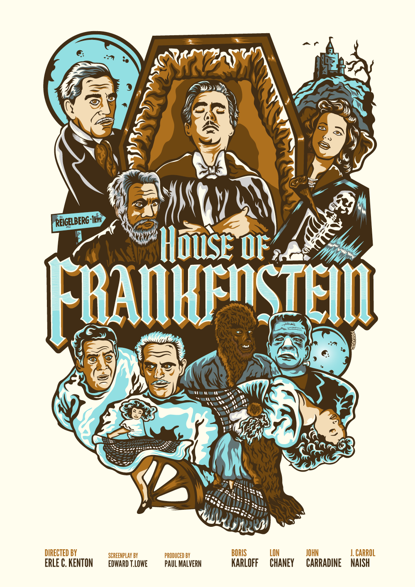
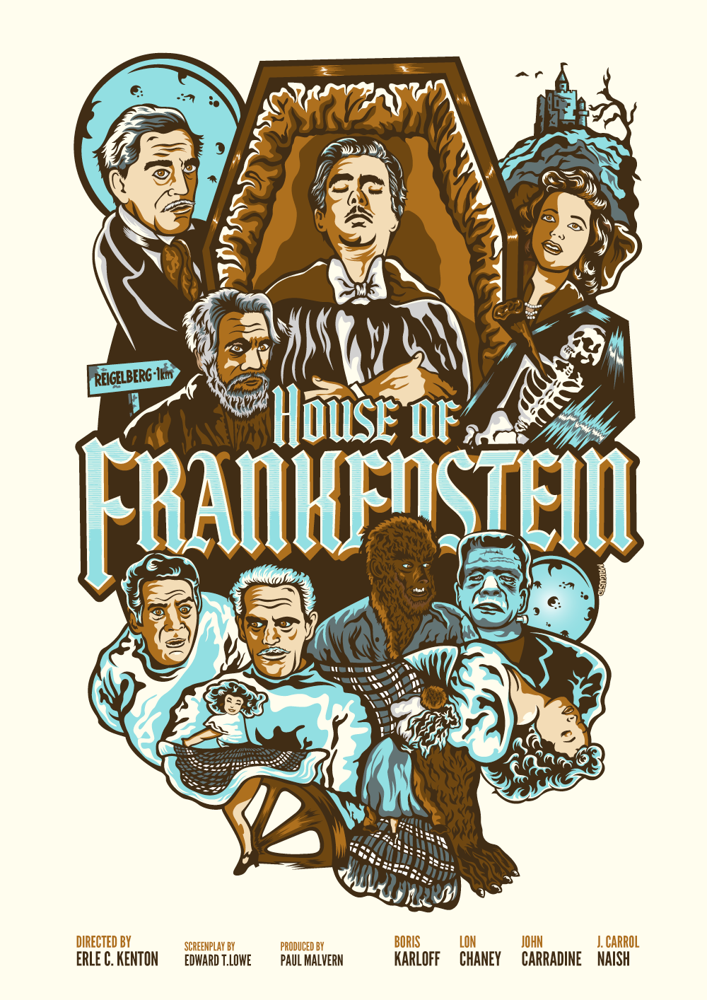

The classic monsters
The classic monsters, called monsters of the Universal, are the monsters that appear in the classic horror films of Universal Pictures, mostly based on classic monsters of literature.
The cinematographic universe of the Classic Monsters is a film franchise started with Dracula. It is cataloged as the first cinematographic universe in history. It belongs to the monsters mash genre.
Our specialise in
TERROR

BLOOD
SCIENCE
Our team
BLOOD
DEATH
FURY
POWER
LOVE
DEATH
PAIN
SCIENCE
Count Dracula
Count Dracula leaves the Carpathians and moves to the West, taking as servant an accountant. Once installed, he falls in love with a young woman who is already engaged. He begins to visit her at night and slowly dries his blood to turn her into his wife. But the malaise that the young woman suffers alerts her family, who seeks the help of Dr. Van Helsing.
- Film Dracula, 1931 USA
- Director by Tod Browning
- Actor Bela Lugosi
- Novel Dracula, Bram Stoker
Frankenstein, the monster
Henry Frankenstein is a doctor who is trying to discover a way to make the dead walk. He succeeds and creates a monster that has to deal with living again.
- Film Frankenstein, 1931 USA
- Director by James Whale
- Actor Boris Karloff
- Novel Frankenstein or The Modern Prometheus, Mary Shelley
Mary Wollstonecraft Shelley. The Monster's Mate
After the escape of the monster created by Dr. Frankenstein, the sinister Dr. Praetorius proposes to the scientist the creation of a companion for the monster.
- Film The bride of Frankenstein, 1935 USA
- Director by James Whale
- Actor Elsa Lanchester
Larry Talbot
After his brother´s death, Larry Talbot returns home to his father and the family estate. Events soon take a turn for the worse when Larry is bitten by a werewolf.
- Film The walf man, 1941 USA
- Director by George Waggner
- Actor Lon Chaney
Imhotep
An ancient Egyptian priest called Imhotep is revived when an archaeological expedition finds his mummy and one of the archaeologists accidentally reads an ancient life-giving spell. Imhotep, escaping from the field site, goes in search for the reincarnation of the soul of his lover.
- Film The mummy, 1942 USA
- Director by Karl Freund
- Actor Boris Karloff
Dr. Jack Griffin
Working in Dr. Cranley’s laboratory, scientist Jack Griffin was always given the latitude to conduct some of his own experiments. His sudden departure, however, has Cranley’s daughter Flora worried about him. Griffin has taken a room at the nearby Lion’s Head Inn, hoping to reverse an experiment he conducted on himself that made him invisible. Unfortunately, the drug he used has also warped his mind, making him aggressive and dangerous. He’s prepared to do whatever it takes to restore his appearance, and several will die in the process.
- Film The invisible man, 1933 USA
- Director by James Whale
- Actor Claude Rains
- Novel The invisible man, H.G. Wells
David Reed
A strange prehistoric beast lurks in the depths of the Amazonian jungle. A group of scientists try to capture the animal and bring it back to civilization for study.
- Film Creature from the Black Laggon, 1954 USA
- Director by Jack Arnold
- Actor Richard Carlson
The Phantom
A grotesquely disfigured composer known as “The Phantom” haunts Paris’ opera house, where he’s secretly grooming Christine Daae to be an opera diva. Luring her to his remote underground lair, The Phantom declares his love. But Christine loves Raoul de Chagny and plans to elope with him. When The Phantom learns this, he abducts Christine.
- Film The Phantom of the Opera, 1925 USA
- Director by Rupert Julian
- Actor Lon Chaney
- Novel The phantom of the opera, Gaston Leroux
 
